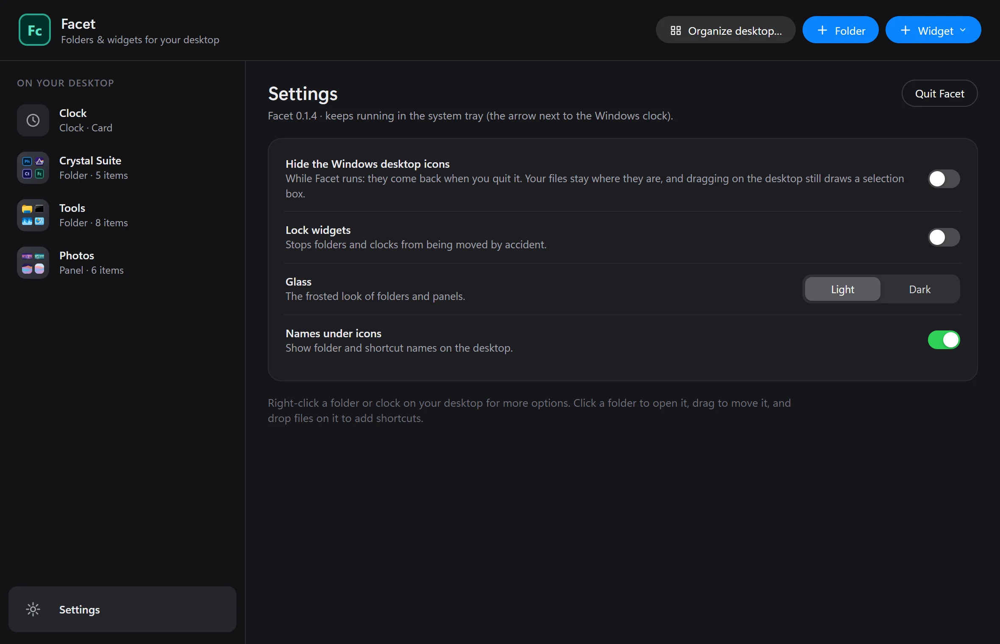

iPhone-style folders and widgets for your desktop
Folders and widgets that live on the Windows desktop itself: iPhone-style folders for your shortcuts, a clock, Spotify and a Control Center, in liquid glass.

A desktop you’ll want to look at
Folders like on an iPhone
A tile that opens in place. Drag apps, files and folders in, rename it, or show it as an always-open panel.
Liquid glass
Clear glass over your actual wallpaper, with a bright edge and a highlight that follows the pointer.
A clock you design
Four faces, six fonts, weight, size and colour, 12 or 24-hour, seconds and the date.
Spotify and Control Center
Now playing with its controls, plus Wi-Fi, Bluetooth, night light, brightness and volume.
Organize desktop
Sorts your desktop into Apps, Games, Documents, Pictures and more. Nothing is moved: folders hold shortcuts.
Light on your PC
Starts when you sign in and idles at well under 1% CPU.

Facet: FAQ
Does Facet move my desktop files?
No. Facet’s folders hold shortcuts, so nothing on your desktop is moved or deleted.
Does Facet slow down my PC?
No. Facet starts when you sign in and idles at well under 1% CPU.
Does the Spotify widget need my account?
No. It reads Windows’ own media controls, so it works with the Spotify app without signing in.
Get Facet free
Facet is part of Crystal Suite: install the launcher, then add Facet with one click.